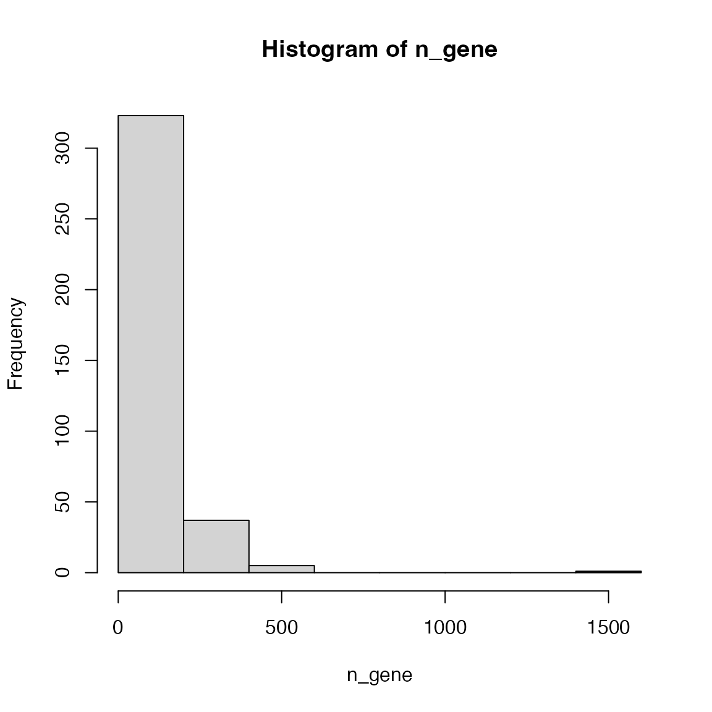
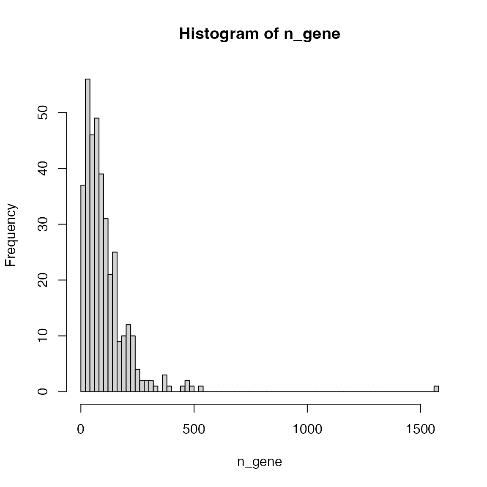

Topic 1-02: KEGG gene sets
Zuguang Gu z.gu@dkfz.de
2025-05-29
Source:vignettes/topic1_02_kegg.Rmd
topic1_02_kegg.RmdKEGG is a comprehensive database which not only contains pathways but also a large variaty of other information. The entrence of getting KEGG data programmatically is via the KEGG REST API.
Please note the restrictions of using KEGG data (https://www.kegg.jp/kegg/legal.html):
Academic use of KEGG
Academic users may freely use the KEGG website at https://www.kegg.jp/ or its mirror site at GenomeNet https://www.genome.jp/kegg/. Academic users who utilize KEGG for providing academic services are requested to obtain an academic service provider license, which is included in the KEGG FTP academic subscription. The KEGG FTP academic subscription, which is a paid service (see background information), may also be obtained to conveniently download the entire KEGG database.Non-academic use of KEGG
Non-academic users must understand that KEGG is not a public database and non-academic use of KEGG generally requires a commercial license. There are two types of commercial licenses available: end user and business. The end user license includes access rights to the FTP site and the website, while the business license includes access rights to the FTP site only. Please contact Pathway Solutions for more details.
Read from the KEGG API
KEGG provides its data via a REST API (https://rest.kegg.jp/). There are several commands that can be used to retrieve specific types of data. The URL form of the request is
https://rest.kegg.jp/<operation>/<argument>[/<argument2[/<argument3> ...]]To get the KEGG pathway gene sets, we will use the following two operators:
-
link: get the mapping between two sources. -
list: get the details of a list of items.
The link operator returns the mapping between two
sources of information. We can use the following command to get the
mappings between genes and pathways for human.
df1 = read.table(url("https://rest.kegg.jp/link/pathway/hsa"), sep = "\t")
head(df1)## V1 V2
## 1 hsa:10327 path:hsa00010
## 2 hsa:124 path:hsa00010
## 3 hsa:125 path:hsa00010
## 4 hsa:126 path:hsa00010
## 5 hsa:127 path:hsa00010
## 6 hsa:128 path:hsa00010In the example, url() constructs a connection object
that directly transfer data from the remote URL. You can also first
download the output from KEGG into a local file, read it and later
delete the temporary file. url() basically automates such
steps.
temp = tempfile()
download.file("https://rest.kegg.jp/link/pathway/hsa", destfile = temp)
df1 = read.table(temp, sep = "\t")
file.remove(temp)Also you can omit url() to directly read from an
URL:
df1 = read.table("https://rest.kegg.jp/link/pathway/hsa", sep = "\t")The URL "https://rest.kegg.jp/link/hsa/pathway" returns
identical results which only switches the two columns in the table.
In the output, the first column contains Entrez ID (users may remove
the "hsa:" prefix for downstream analysis) and the second
columncontains KEGG pathways IDs (users may remove the
"path:" prefix).
## V1 V2
## 1 10327 hsa00010
## 2 124 hsa00010
## 3 125 hsa00010
## 4 126 hsa00010
## 5 127 hsa00010
## 6 128 hsa00010To get the full name of pathways, use the list
command:
df2 = read.table(url("https://rest.kegg.jp/list/pathway/hsa"), sep = "\t")
head(df2)## V1 V2
## 1 hsa01100 Metabolic pathways - Homo sapiens (human)
## 2 hsa01200 Carbon metabolism - Homo sapiens (human)
## 3 hsa01210 2-Oxocarboxylic acid metabolism - Homo sapiens (human)
## 4 hsa01212 Fatty acid metabolism - Homo sapiens (human)
## 5 hsa01230 Biosynthesis of amino acids - Homo sapiens (human)
## 6 hsa01232 Nucleotide metabolism - Homo sapiens (human)## V1 V2
## 1 hsa01100 Metabolic pathways
## 2 hsa01200 Carbon metabolism
## 3 hsa01210 2-Oxocarboxylic acid metabolism
## 4 hsa01212 Fatty acid metabolism
## 5 hsa01230 Biosynthesis of amino acids
## 6 hsa01232 Nucleotide metabolismHighlight genes
KEGG also provides pathways as graphs (figures). You may want to highlight differential genes on the graph to see how they specifically affect the pathway. All you need to do is to prepare a two-column table where the first column contains genes and the second column contains color-settings.
Let’s take the pathway “hsa04110” as an example. We color 10 random genes.
library(circlize)
df1 = read.table("https://rest.kegg.jp/link/pathway/hsa", sep = "\t")
genes = df1[df1[, 2] == "path:hsa04110", 1]
diff_genes = sample(genes, 10)
settings = data.frame(
genes = diff_genes,
colors = rand_color(10)
)
write.table(settings, file = stdout(), row.names = FALSE,
col.names = FALSE, quote = FALSE, sep = "\t")hsa:983 #CD0724FF
hsa:4172 #EF6676FF
hsa:64682 #2A10D2FF
hsa:7043 #62322BFF
hsa:25847 #8DF8F8FF
hsa:1026 #8232B4FF
hsa:114799 #E4E886FF
hsa:51433 #2E098BFF
hsa:5111 #89BFE7FF
hsa:8556 #065673FFThen open https://www.kegg.jp/pathway/hsa04110.
The value of colors can be a color name (e.g. red, white) or a
hexadecimal code (e.g. #0000FF)
Note the prefix “hsa:” of gene IDs has no effect. You can keep it or
remove it. For the discrete color mapping, the second column can contain
two colors in one row in the form of color1,color2 which
corresponds to the filled color and the border color. Note the border
color also includes the color of the text.
settings = data.frame(
genes = diff_genes,
colors = paste0(rand_color(10), ",", sample(colors(), 10))
)
write.table(settings, file = stdout(), row.names = FALSE,
col.names = FALSE, quote = FALSE, sep = "\t")hsa:983 #AF4EA2FF,gray84
hsa:4172 #08FF6CFF,pink1
hsa:64682 #D5C00FFF,gray10
hsa:7043 #C9F0FFFF,cadetblue3
hsa:25847 #DA13F4FF,gray57
hsa:1026 #97EFF3FF,lightcyan2
hsa:114799 #DE0BAAFF,gray18
hsa:51433 #2DF14BFF,antiquewhite1
hsa:5111 #04416AFF,lightgrey
hsa:8556 #15E96DFF,darkgreyTo use continuous color mapping, the second column should contain numeric values.
settings = data.frame(
genes = diff_genes,
colors = runif(10)
)
write.table(settings, file = stdout(), row.names = FALSE,
col.names = FALSE, quote = FALSE, sep = "\t")hsa:983 0.727990938350558
hsa:4172 0.217084462288767
hsa:64682 0.456230198265985
hsa:7043 0.33279975829646
hsa:25847 0.56835266854614
hsa:1026 0.252205724827945
hsa:114799 0.464013566728681
hsa:51433 0.91766050690785
hsa:5111 0.972844217903912
hsa:8556 0.819082446629182How to set gene colors: https://www.genome.jp/kegg/webapp/color_gui.html
The package ggkegg also supports customizing KEGG graph.
Practice
Practice 1
In the previous example, we obtained the mapping between genes and
KEGG pathways for human, using the organism code of "hsa".
Since human is very well-studied and everyone knows "hsa"
is for human, what if you are studying dogs? Try to find out the
organism code for dog and get the gene-pathway mappings for dog.
Hint: use the list operator in KEGG API and search for
dog.
You can get organism codes for all organisms by https://rest.kegg.jp/list/organism. Then you will find
the code for dog is "cfa".
df = read.table(url("https://rest.kegg.jp/link/pathway/cfa"), sep = "\t")Practice 2
Make the distribution of the numbers of genes in KEGG pathways (for human).
There is a pathway that contains far more genes than all other pathways. What is the pathway ID of it and what is its full name? Go to the web page of this largest pathway to see its real structure.
df1 = read.table(url("https://rest.kegg.jp/link/pathway/hsa"), sep = "\t")
n_gene = table(df1[, 2])
hist(n_gene)
Making the intervals smaller is better:
hist(n_gene, nc = 100)
The largest pathway:
which.max(n_gene)## path:hsa01100
## 87Its name:
df2 = read.table(url("https://rest.kegg.jp/list/pathway/hsa"), sep = "\t")
df2[df2[, 1] == "hsa01100", ]## V1 V2
## 1 hsa01100 Metabolic pathways - Homo sapiens (human)And its url on KEGG: https://www.kegg.jp/pathway/hsa04110.
Practice 3
Highlight the following genes “TGFB1”, “TP53”, “CDC7” and “E2F1” on the pathway image of “Cell cycle” (organism: human). Choose colors that you like.
Note: you need to first convert gene symbols to Entrez IDs.
df2 = read.table(url("https://rest.kegg.jp/list/pathway/hsa"), sep = "\t")
df2[, 2] = gsub(" - Homo .*$", "", df2[, 2])
pathway_id = df2[df2[, 2] == "Cell cycle", 1]
pathway_id## [1] "hsa04110"Convert symbols to Entrez IDs:
library(org.Hs.eg.db)
genes = mapIds(org.Hs.eg.db, keys = c("TGFB1", "TP53", "CDC7", "E2F1"),
keytype = "SYMBOL", column = "ENTREZID")
genes## TGFB1 TP53 CDC7 E2F1
## "7040" "7157" "8317" "1869"Prepare the color table:
7040 red,blue
7157 blue,red
8317 yello,darkgreen
1869 grey,redThen go to https://www.genome.jp/pathway/hsa04110 and paste the color table there.